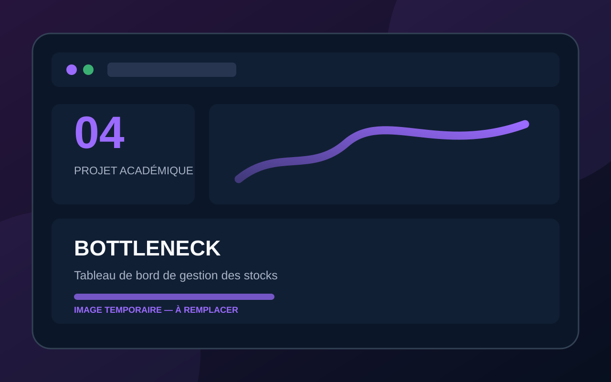

Étude de cas
Bottleneck — Tableau de bord de gestion des stocks
Tableau de bord de pilotage des ventes, des marges et des stocks pour le dirigeant et les chefs de produits.

Présentation et contexte
Après la fiabilisation des données, Bottleneck souhaitait une solution durable de data visualisation, avec une méthode d’intégration adaptée et un outil simple à utiliser.
Objectif
Proposer une solution d’intégration et concevoir un tableau de bord intégrant des recommandations business.
Besoin ou problème
L’entreprise manquait d’un outil centralisé, actualisable et clair pour les utilisateurs métier.
Résultat attendu
Un tableau de bord interactif et un rapport de préconisation sur la solution d’accès aux données.
Mon rôle et mes réalisations
J’ai comparé plusieurs solutions, importé la base SQLite, modélisé les données, créé les mesures DAX et réalisé le tableau de bord.
Principales fonctionnalités
- KPI de CA
- Analyse des marges
- Suivi des stocks
- Analyse des promotions
- Filtres dynamiques
- Recommandations business
Outils et technologies
Compétences mobilisées
- Architecture de données
- Modélisation
- DAX
- Dataviz
- Analyse métier
- Storytelling
Savoir-être exploités
- Autonomie
- Sens du service
- Organisation
- Communication
Livrables principaux
Rapport de préconisation, tableau de bord et recommandations business.